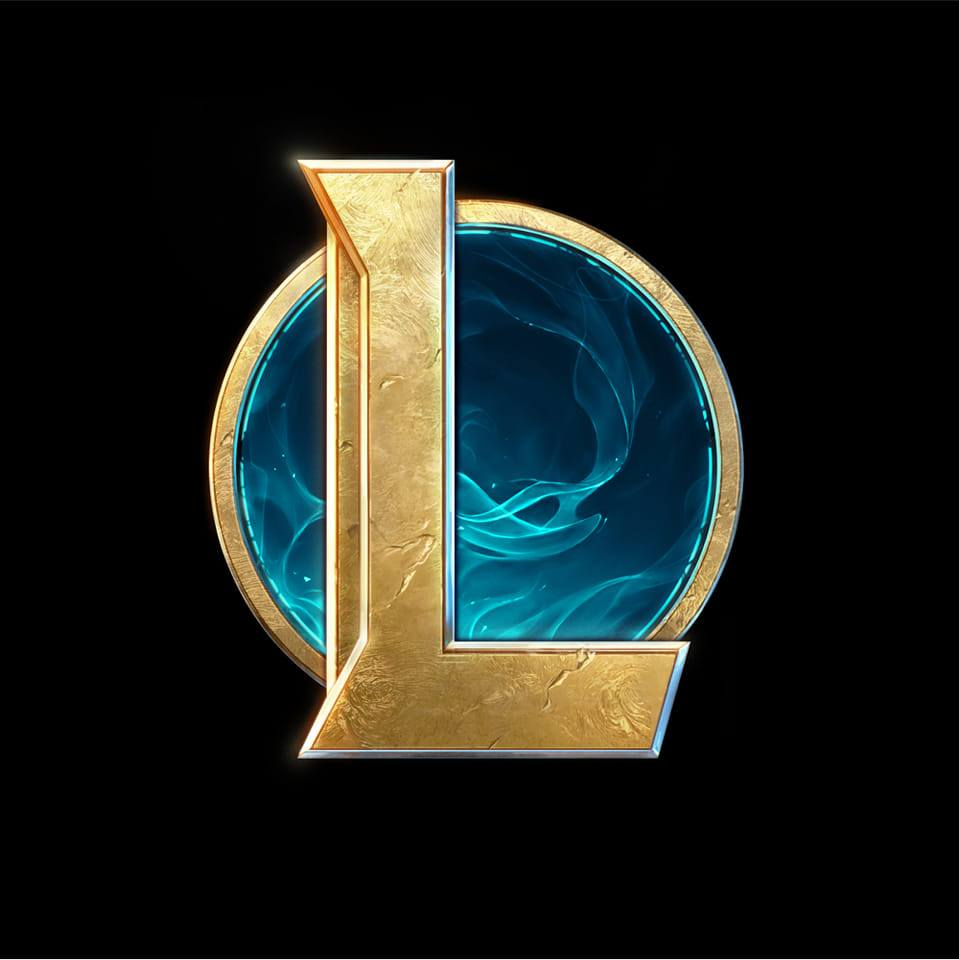

League of Legends (LoL), commonly referred to as League, is a 2009 multiplayer online battle arena video game developed and published by Riot Games.
Inspired by Defense of the Ancients, a custom map for Warcraft III, Riot's founders sought to develop a stand-alone game in the same genre. Since its release in October 2009, League has been free-to-play and is monetized through purchasable character customization. The game is available for Microsoft Windows and macOS.In the game, two teams of five players battle in player-versus-player combat, each team occupying and defending their half of the map. Each of the ten players controls a character, known as a "champion", with unique abilities and differing styles of play. During a match, champions become more powerful by collecting experience points, earning gold, and purchasing items to defeat the opposing team. In League's main mode, Summoner's Rift, a team wins by pushing through to the enemy base and destroying their "Nexus", a large structure located within.
